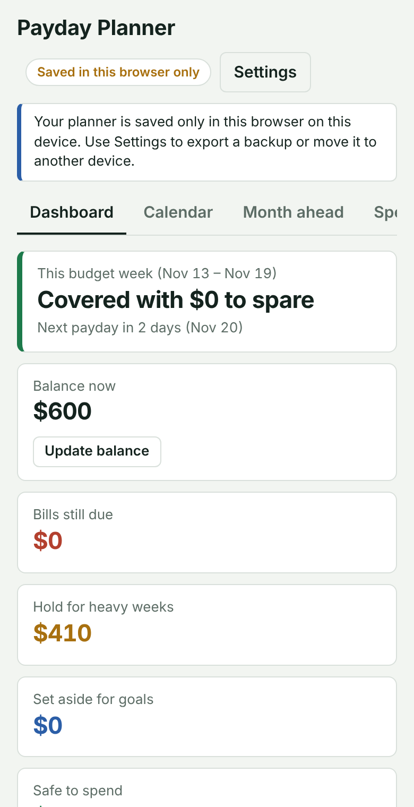
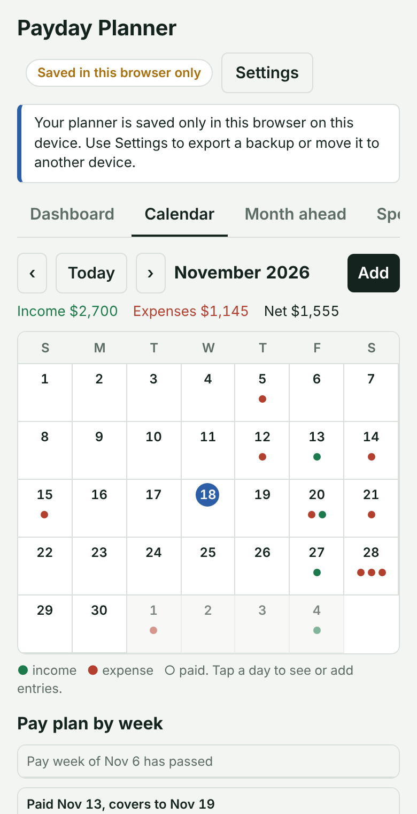

Know what every paycheck has to cover.
Payday Planner works out what this week’s bills need, what to hold back for heavy weeks, and what is truly left for savings and debt, all on a calendar you can read at a glance.


Built around payday, not the calendar month
Pay-week planning
Each paycheck funds the week ahead, from payday to the day before the next one. See bills, what is held, and what is left to spend.
Heavy weeks handled
Rent at the start of the month and car payments at the end? The planner spreads the shortfall across lighter weeks so you are never caught short.
Goals that work backwards
Set a target and a date. It tells you what to set aside each payday, funded after your bills.
Debt payoff mode
Enter what you owe, the interest rate and your minimum. See extra payments and an estimated debt-free date.
Flexible bills
Change one payment, skip it, or update this and future payments. Mark bills paid and your balance follows.
Reminders and spending
Alerts for the week’s bills and for anything due tomorrow, plus a simple spending summary by category.
Up and running in three steps
- Add your paycheck and billsEnter what comes in and what is due, and how often each repeats.
- See your pay weekYour dashboard shows what is covered, what to hold, and what is safe to spend.
- Set a goalSave for something or pay down a debt, and follow the plan each payday.
Put it on your phone
iPhone or iPad
- Open this site in Safari.
- Tap the Share button.
- Choose Add to Home Screen.
Android
- Open this site in Chrome.
- Open the menu.
- Tap Install app or Add to Home screen.
Your data stays yours
Right now your planner is saved only in your own browser. Nothing is sent anywhere, and you can export a backup any time from Settings. Accounts are on the way so your planner can follow you between phone and computer.